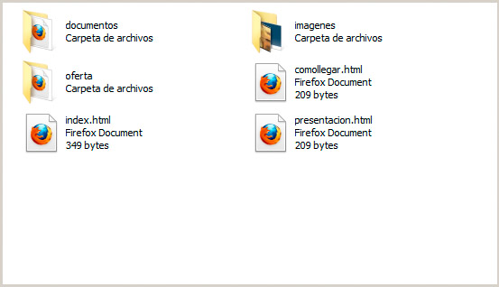

Los enlaces externos son aquellos que creamos en nuestra web, para que nuestros usuarios puedan acceder a otro sitio web concreto o a un punto determinado del mismo. En estos casos, necesitaremos conocer previamente la dirección única de Internet (la conocida como URL) del sitio en concreto.
Para crear un enlace, necesitaremos también decidir qué parte de nuestra página será el enlace. Normalmente utilizaremos una palabra, una frase o una imagen, de forma que cuando el usuario haga clic en ese punto, el navegador le llevará a su nuevo destino.
Para crear un enlace utilizamos la etiqueta <a> y el parámetro href para indicar la dirección a la que queremos acceder. Este elemento también cuenta con una etiqueta de cierre </a>, de modo que todo lo que queda dentro será el contenido sobre el que el usuario podrá hacer clic.
Observe este ejemplo:
<p>Para localizar el significado de una palabra, accede al <a href=”http://buscon.rae.es”>diccionario de la RAE</a>. Luego regresa a nuestra página.</p>
Para localizar el significado de una palabra, accede al diccionario de la RAE. Luego regresa a nuestra página.
Referencias relativas y absolutas
Al enlazar a otros sitios web, hemos insistido mucho en que es necesario indicar la URL completa, es decir, la dirección entera comenzando por su http://, con el nombre del sitio web a continuación, y con todas las carpetas y subcarpetas que nos permitiesen identificar la página de forma inequívoca. Con ello conseguimos lo que se conoce como una referencia absoluta, porque al ser las URL únicas en todo Internet, no hay posibilidad de ambigüedades. Si la URL está completa, sabemos que apunta a una página específica entre los miles de millones de páginas de Internet.

Por el contrario, este celo en las direcciones no debemos aplicarlo al hacer un enlace entre las páginas web de un sitio web; más bien al contrario. En este caso nos interesa generar referencias relativas, es decir, que los enlaces tomarán sentido dependiendo de su posición en las carpetas. Por ejemplo, si desde la página index.html del ejemplo anterior quiero enlazar con la página presentación.html que se encuentra en la misma carpeta, podría hacerlo con el método absoluto:
<a href=”http://www.misitioweb.com/presentacion.html”>Accede a la presentación</a>
o mediante un sencillo enlace relativo:
<a href=”presentacion.html”>Accede a la presentación</a>
El segundo método es el correcto. Dado que las dos páginas están en la misma carpeta, sólo necesito indicar su nombre.
Hay dos motivos clave por los que debemos actuar así en los enlaces entre páginas de un mismo portal:
a) Si utilizamos la URL absoluta, nos obligamos a indicar de antemano la dirección completa del sitio web; algo que quizás no tengamos mientras estamos preparando las páginas y que además nos obligaría a colocar las páginas en Internet para poder probarlas.
b) Si en un momento determinado el sitio web cambia de dominio o lo trasladamos a otra parte, todos los enlaces dejarían de funcionar, al hacer referencia al sitio antiguo. Por el contrario, si mantenemos los enlaces como relativos, todo el sitio funcionará sin problema se coloque donde se coloque.
Veamos un par de ejemplos más para entender mejor la situación:
Si, por ejemplo, quisiéramos acceder desde la página index.html a otra página denominada index.html también, pero que se encuentra dentro de la carpeta oferta, lo hariamos de esta manera:
<a href=”oferta/index.html”>Nuestra oferta formativa</a>
La "/" nos sirve para referirnos a las subcarpetas que nacen desde la carpeta raíz del sitio web.
¿Y para acceder desde la página index.html de la carpeta oferta a una página de la carpeta raiz del sitio? Para acceder a una carpeta anterior, se emplea una referencia heredada de los sistemas operativos que nos dice que la secuencia ".." nos llevará a la carpeta previa. Por ejemplo, en la página index.html de la carpeta oferta podría indicar lo siguiente:
<a href=”../presentacion.html”>Consultar la presentación del sitio web</a>
En resumen, las tres técnicas para direccionar un enlace son:
- Si las páginas están en la misma carpeta: indicamos el nombre de los archivos nada más.
- Si está en una o varias subcarpetas: indicamos las subcarpetas con una / como separador (por ejemplo, documentos/2014/proyecto.html).
- Si está en una o varias carpetas anteriores a la actual: utilizamos .. para retroceder en la estructura (por ejemplo ../../propuestas.html nos llevaría a un archivo situado en dos carpetas antes).
- También podemos mezclar .. y / para obtener toda la versatilidad necesaria. Por ejemplo (../2013/proyectos).
Destino u objetivo del enlace
Un aspecto, que podemos variar al crear un enlace, es el lugar en el que se debe desplegar el nuevo contenido al que vamos a acceder. Habitualmente dejaremos que se abra siempre en la misma ventana en la que esté la página web o que sea el usuario el que decida si quiere crear una nueva pestaña o ventana. No obstante, nosotros podemos influir en esa decisión indicando mediante el parámetro target un destino determinado.
La siguiente dirección, por ejemplo, hace que la página web no se abra en la ventana habitual, sino en una ventana nueva o en una pestaña, dependiendo de nuestro navegador:
Prueba en el <a href="http://www.google.es" target="_blank">buscador</a>
Junto a _blank (abrir en pestaña nueva o ventana nueva ) y _self (que no se suele emplear porque es el valor predeterminado que indica que se abra en la misma ventana) contamos con _parent y _top, que indican que la página se debe abrir en el marco anterior o en el espacio principal de la página. Se suelen emplear al trabajar con los marcos que se crean con el elemento iframe, que permite mostrar páginas dentro de páginas. Lo trataremos más adelante.